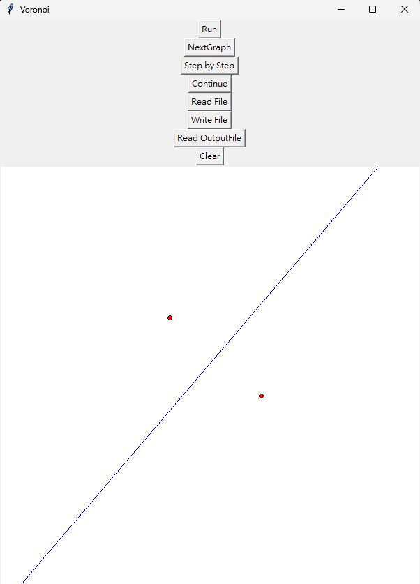
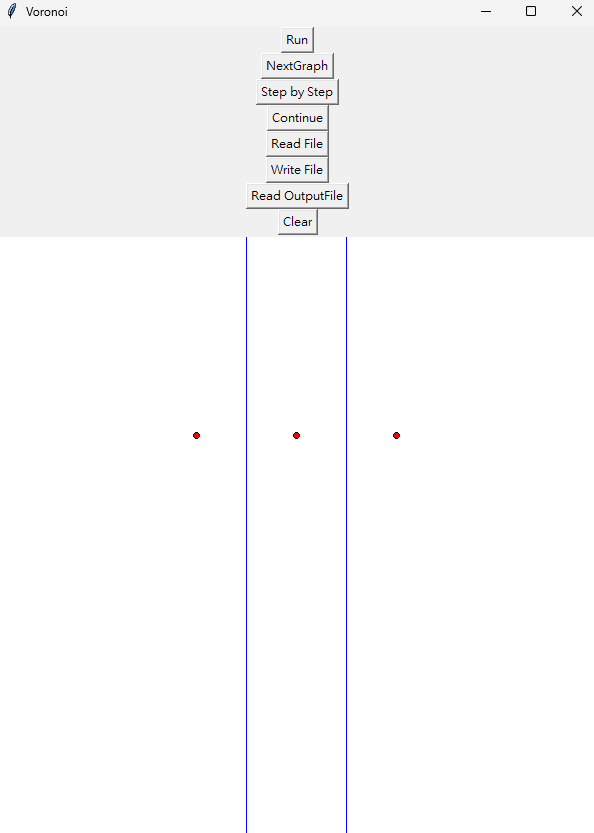
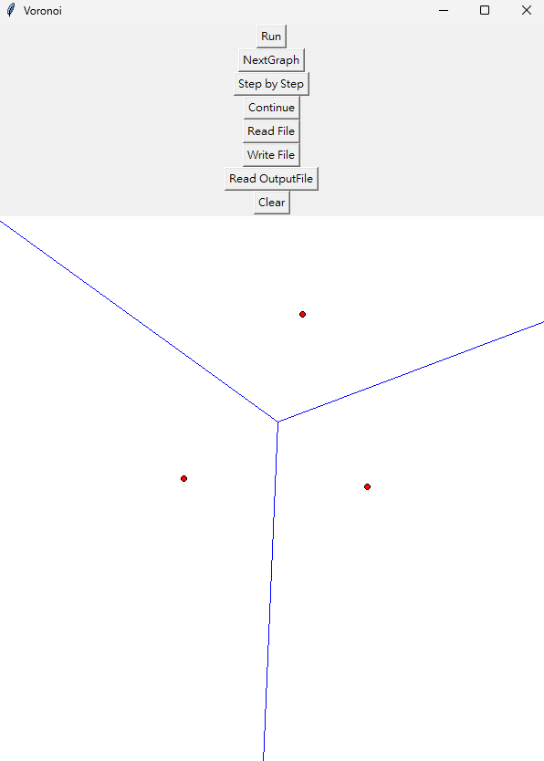

程式設計
：將演算法於程式設計中，需要使用的資料結構，所需注意的細節或特別的技巧，在此部分講述。如果演算法有改良之處，亦在此描述。
Class
- Voronoi
此Class主要處理與Vornoi Diagram相關的功能，舉例:
- 解voronoi diagram
- convex hull
- divide and conquer
- hyper plane
- Graph
此Class主要處理與Graph相關的功能，舉例:
- 計算line兩端點的最大邊界
- 裁切線段回傳畫布上兩端點
- 新增、紀錄點線
- 找出線段交點
- 與線段相關的功能
- Uiapp
此Class主要處理與UI相關的功能，舉例:
- 處理button的點擊及call function
- 處理Interrupt
- 處理Input及Output
資料結構
點
線段
- draw1, draw2
- point_a, point_b
- edge_piont1, edge_point2
- id
點的資料結構為一個list，存放每個點的座標，格式為[(x, y), ..., (x, y)]。
點的id資料結構為一個list，存放每個點的id，格式為[id, ..., id]。
線段的資料結構為一個list，存放每條線段的資訊，格式為
[[draw1, draw2, point_a, point_b, edge_piont1, edge_point2, id],...]。
draw1, draw2為畫布上的線段兩端點。
point_a, point_b為畫布上的兩點畫出來的Voronoi線段。
edge_piont1, edge_point2為超出畫布外但仍為此線段的兩端點。
id為線段的id。
演算法
三點以下: 暴力解
-
一個點
一個點不存在 Voronoi 線段，因此回傳 Voronoi 空集合。
-
兩個點
兩個點的 Voronoi 線段為兩點的中垂線。
 -
三個點
- 判斷三角形的類型，若為三點共線須進行例外處理(回傳兩條Voronoi線段: 由三點中的中間頂點與另外兩點的中垂腺)
- 找出三角形的外心，外心為三點的垂直平分線的交點
- 銳角三角形：由外心向三頂點的射線為 Voronoi 線段
- 鈍角三角形：與 3-1 不同之處在於其中一條 Voronoi 線段會由外心遠離兩個銳角頂點，此部分要特別判斷。

四點以上: divide and conquer
分割 (Divide)
步驟
將所有點依據 x 座標排序，並將點分為左右兩個子集合並回傳。
合併 (Merge)
-
Convex Hull
使用 Graham's Scan 演算法計算凸包。具體步驟如下：
- 找到最左下的點作為基準點。
- 將其他點按相對基準點的極角進行排序，若角度相同則按距離排序。
- 依次遍歷排序後的點，使用 叉積 (Cross Product) 判斷點是否形成逆時針方向的凸包邊界。
- 如果形成順時針方向，移除最後加入的點，確保邊界是凸的。
最終結果為一個封閉的凸包，包含所有點。
-
合併凸包
- 將左右兩部分的頂點集合進行合併。
- 重新對合併後的點集進行凸包計算（使用 Graham's Scan）。
- 合併後的凸包包含所有輸入點的外部邊界。
此部分的時候我沒有依序由左Convex Hull最右點及右Convex Hull最左點順逆時針刪除造訪到的點， 而是直接將左右Convex Hull的點全部合併，並重新呼叫Convex Hull函數，找出新的Convex Hull，此部分可以再改善。
-
找出上下切線
對合併後的左右凸包，找到其 上公切線 和 下公切線，具體步驟如下：
-
下公切線：
- 從左凸包的最右點和右凸包的最左點開始。
- 固定右側點，調整左側點，使切線方向順時針旋轉。
- 固定左側點，調整右側點，使切線方向逆時針旋轉。
- 直到左右兩邊的點不再移動，即確定下公切線。
-
上公切線：
- 從左凸包的最右點和右凸包的最左點開始。
- 固定右側點，調整左側點，使切線方向逆時針旋轉。
- 固定左側點，調整右側點，使切線方向順時針旋轉。
- 直到左右兩邊的點不再移動，即確定上公切線。
例外情況處理：
當兩個凸包的點共線時（即切線與一條邊完全重合）：- 程式檢查三個點是否共線（切線的兩端點與第三點），並計算點與邊的相對位置。
- 如果三點共線，切線會選擇遠離另一側凸包的方向，避免重複或錯誤計算。
- 當切線完全共線且有多個候選點時，程式會選擇最靠外的點作為最終的切線端點。
這種處理方式保證了切線的正確性，避免因共線情況導致的邊界錯誤。
-
下公切線：
-
找出 Hyperplane
1. 初始化
輸入資料：
- 上下公切線：
上公切線 T_u = (P_u, Q_u)，下公切線 T_l = (P_l, Q_l)。 - Voronoi 圖的邊集合
E_v，每條邊表示為：[draw1, draw2, point_a, point_b, edge_piont1, edge_point2, id]。
第一條 Hyperplane：
- 計算上公切線的垂直平分線。
- 將該線段由畫布邊界延伸至與第一個與voronoi edge交集的點，作為第一條 Hyperplane。
- 記錄 Hyperplane 的起始點與生成點。
2. 從第一條 Hyperplane 開始遍歷
Hyperplane 的延伸方向：
- 從第一條 Hyperplane 開始，計算其與所有 Voronoi 邊的交點。
- 找出與 Hyperplane 最近的交點，記錄該交點。
- 檢查交點是否落在某條 Voronoi 邊的內部，確認交點所屬的 Voronoi 邊。
3. 走路法
找到交點後，使用走路法確定下一條 Hyperplane：
-
找到與交點相鄰的 Voronoi 邊：
- 檢查交點與 Voronoi 邊的生成點關係，確定哪條邊相鄰。
- 記錄新邊的生成點，例如
P_a和P_b。
-
計算下一條 Hyperplane：
- 選取相鄰邊的生成點
P_b和P_c。 - 計算
P_b和P_c的垂直平分線，作為新的 Hyperplane。
- 選取相鄰邊的生成點
-
更新 Hyperplane 的終點：
- 找到 Hyperplane 與畫布邊界或其他 Voronoi 邊的最近交點，作為終點。
4. 重複操作
重複以上步驟，從當前 Hyperplane 的終點開始，遍歷所有相鄰的 Voronoi 邊。
繼續延伸 Hyperplane，直到：- Hyperplane 與畫布邊界相交。
- Hyperplane 遍歷完所有 Voronoi 邊。
- 上下公切線：
-
擦除 Voronoi 線段
擦除 Voronoi 線段的主要步驟如下：
1. 根據 Hyperplane 的旋轉方向進行判斷
- 計算當前 Hyperplane 與上一條 Hyperplane 的方向向量。
- 通過向量的 叉積 (Cross Product) 判斷旋轉方向：
- 若 叉積為正，表示當前 Hyperplane 的方向是逆時針。
- 若 叉積為負，表示當前 Hyperplane 的方向是順時針。
2. 擦除與 Hyperplane 相交的 Voronoi 線段
根據旋轉方向，對交集 Voronoi 線段進行擦除：
- 對所有與當前 Hyperplane 相交的 Voronoi 線段進行遍歷。
- 計算交點與該 Voronoi 線段的兩端點形成的向量。
- 使用這些向量與 Hyperplane 的方向向量計算叉積，確定需要保留或擦除的部分：
- 若旋轉方向為 順時針，則擦除交點右側（遠離 Hyperplane 起始點方向）的部分。
- 若旋轉方向為 逆時針，則擦除交點左側（靠近 Hyperplane 起始點方向）的部分。
- 對於需要擦除的部分，更新 Voronoi 線段的終點或起點，並在畫布上移除相應的部分。
3. 例外情況處理
若 Hyperplane 與 Voronoi 線段完全共線：
- 判斷 Hyperplane 與 Voronoi 線段的方向一致性。
- 僅擦除遠離 Hyperplane 起始點的部分，確保不影響其他線段的結構。
4. 結果
最終，通過旋轉方向的判斷，保留了正確的 Voronoi 線段，並刪除了與 Hyperplane 不符的部分，生成了正確的 Voronoi 圖結構。
-
清理孤立線段
在合併過程中，可能出現孤立的 Voronoi 線段。這些線段的特徵為：
- 兩個端點的連接數均小於或等於 2。
- 無法有效參與形成連通的 Voronoi 網絡結構。
1. 定義孤立線段
孤立線段的特徵為：
- 線段的兩個端點在所有 Voronoi 線段的端點集合中出現次數不超過 2。
- 這表明該線段的兩個端點均無法與其他線段形成有效的網絡拓撲結構。
2. 檢查所有線段
- 構建所有線段的端點集合，統計每個端點的出現次數。
- 遍歷每條 Voronoi 線段，檢查其兩端點的出現次數：
- 若兩個端點的出現次數均小於或等於 2，則該線段被標記為孤立線段。
3. 刪除孤立線段
- 對於被判定為孤立的線段，從 Voronoi 線段集合中移除。
- 在畫布上刪除該線段的繪製。
4. 結果
通過清理孤立線段，保證合併後的 Voronoi Diagram 僅包含有效且連續的線段，形成正確的網絡結構。
-
整合結果
在完成 Hyperplane 和 Voronoi 線段的生成及清理後，進行最終的整合操作，以構建正確且完整的 Voronoi Diagram。
1. 合併 Hyperplane 和 Voronoi 線段
- 將所有 Hyperplane 線段（例如，上下公切線的延伸段和中間生成的 Hyperplane）加入線段集合。
- 將清理過的 Voronoi 線段集合合併到最終線段集合中。
- 避免重複線段的加入：檢查線段的起點和終點是否已存在於集合中。
2. 重繪畫布
在整合完所有有效線段後，對畫布進行更新：
- 刪除畫布上所有孤立線段和多餘的 Hyperplane。
- 繪製整合後的所有有效 Voronoi 線段，標記為最終結果。
3. 確保邊界完整性
由於部分 Hyperplane 和 Voronoi 線段可能在畫布邊界處被裁剪，需進行以下操作：
- 檢查所有線段的起點和終點是否在畫布邊界內。
- 若線段在邊界外，進行邊界裁剪，保留有效部分。
- 更新線段集合中的起點和終點信息，並重新繪製。
4. 結果
最終整合結果為：
- 包含所有有效的 Voronoi 線段。
- 由 Hyperplane 延伸構成的補充線段。
- 正確裁剪後的畫布邊界線段。
這些結果共同構成完整且正確的 Voronoi Diagram。